Op-Amp Mathematical Circuits
In this chapter
20.1 Ideal integrator
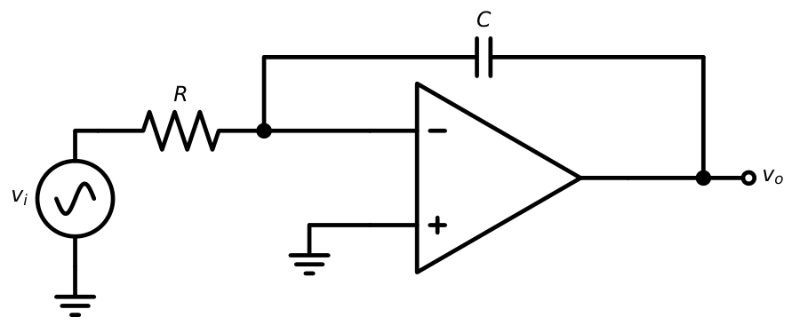
Virtual ground: \(i=v_i/R=C\,d(0-v_o)/dt\), so
\(v_o(t)=-\dfrac1{RC}\int_0^tv_i\,dt+v_o(0)\), \(\dfrac{V_o(s)}{V_i(s)}=-\dfrac{1}{sRC}\), \(\left|\dfrac{V_o}{V_i}\right|=\dfrac1{\omega RC}\), phase \(+90^\circ\).
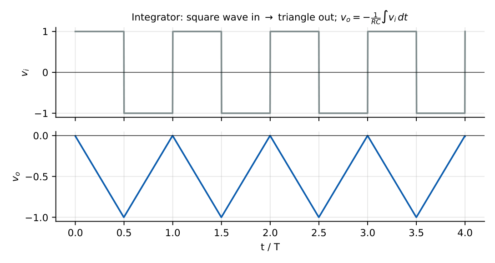
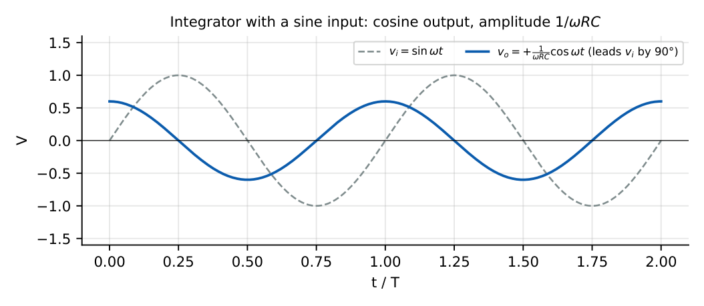
\(R=10\) k\(\Omega\), \(C=0.1\ \mu\)F (\(RC=1\) ms). A \(+1\) V step gives a ramp with slope \(-1\) V/ms: \(v_o=-5\) V after \(5\) ms. For a \(1\) kHz, \(1\) V peak sine: \(|A|=1/(2\pi\times1000\times10^{-3})=0.159\), so \(0.159\) V peak.
The unity-gain frequency is \(f_0=1/(2\pi RC)\).
20.2 Practical integrator
The ideal integrator has infinite DC gain: any offset or bias current integrates until the output saturates. A resistor \(R_f\) in parallel with \(C\) limits the DC gain to \(-R_f/R_1\).
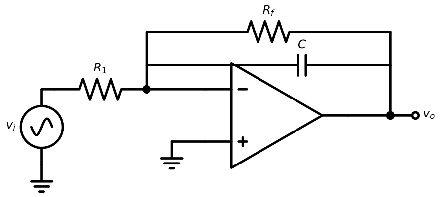
\(\dfrac{V_o}{V_i}=-\dfrac{R_f/R_1}{1+j\omega R_fC}\)
Integration is valid for \(f\gg f_a=\dfrac1{2\pi R_fC}\); DC gain \(=-R_f/R_1\).
\(R_1=10\) k, \(R_f=100\) k, \(C=0.1\ \mu\)F: DC gain \(-10\) (20 dB); \(f_a=1/(2\pi\times100\,\mathrm k\times0.1\,\mu)=15.9\) Hz. The circuit integrates signals above about \(160\) Hz (\(10f_a\)).
20.3 Ideal differentiator
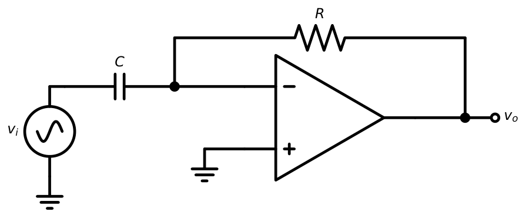
\(v_o=-RC\dfrac{dv_i}{dt}\), \(\dfrac{V_o}{V_i}=-sRC\), \(|A|=\omega RC\) (gain rises \(+20\) dB/dec), phase \(-90^\circ\).
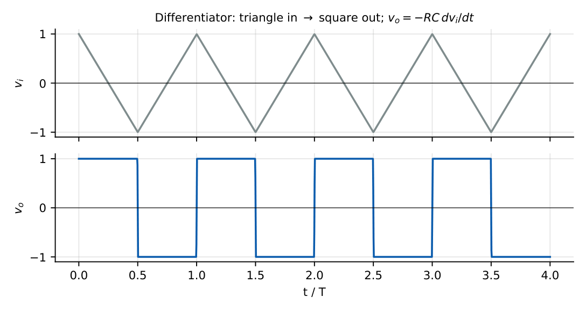
\(RC=1\) ms and \(v_i=0.5\sin(2\pi\times1000t)\): \(v_o=-RC\omega V_m\cos\omega t\), peak \(=10^{-3}\times6283\times0.5=3.14\) V. A ramp of \(5\) V/ms with \(RC=0.1\) ms gives \(v_o=-0.5\) V.
20.4 Practical differentiator
The ideal differentiator has a gain that rises without limit with frequency, amplifying noise, and it is prone to oscillation because the op-amp’s own pole adds a second \(-90^\circ\) to the loop.
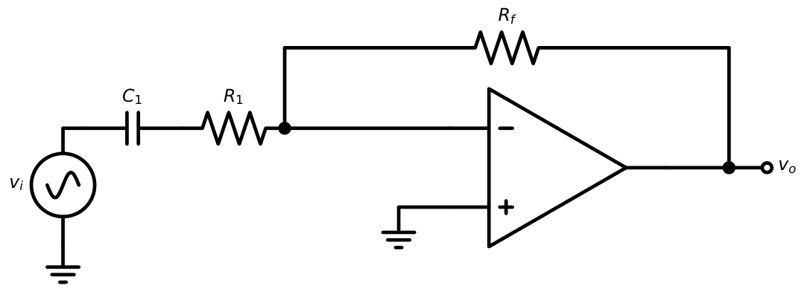
\(\dfrac{V_o}{V_i}=-\dfrac{j\omega R_fC_1}{(1+j\omega R_1C_1)}\) (with \(C_f\): \(\dfrac{-j\omega R_fC_1}{(1+j\omega R_1C_1)(1+j\omega R_fC_f)}\))
Differentiation valid for \(f<f_a=\dfrac{1}{2\pi R_1C_1}\); above \(f_a\) the gain is flat at \(-R_f/R_1\).
20.5 Integrator frequency response
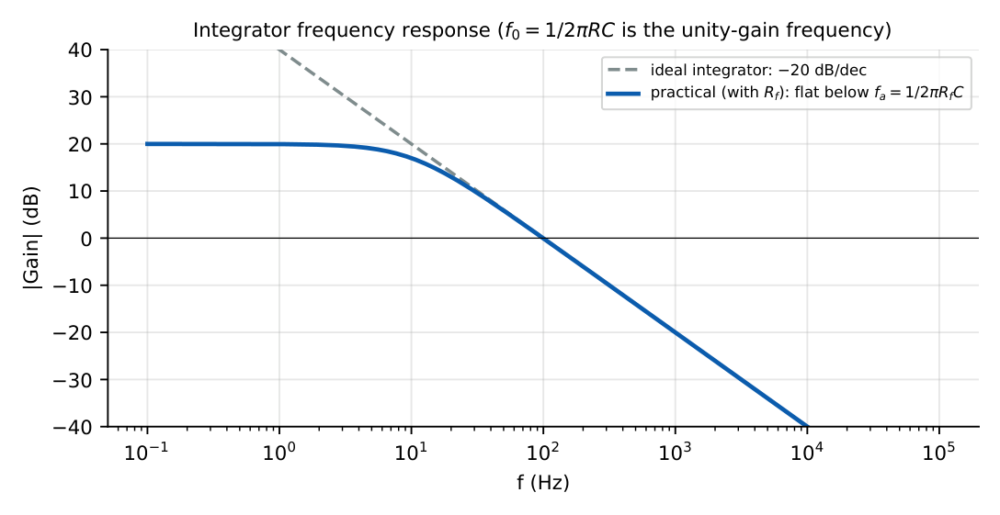
20.6 Differentiator frequency response
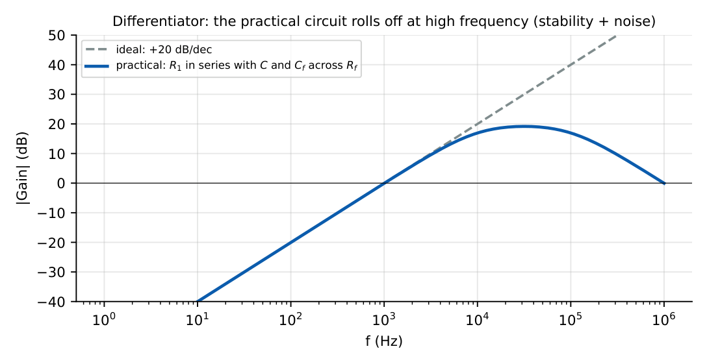
20.7 Stability limitations
The differentiator’s loop gain \(A\beta\) has \(\beta=1/(1+j\omega R_1C)\)-like behaviour that adds phase lag; together with the op-amp pole this leaves too little phase margin at the crossover point. The remedy is to reduce loop-gain slope with \(R_1\) and \(C_f\): crossover in a region where the closed-loop gain curve is flat (Chapter 28). The integrator is inherently stable (\(\beta\) is a first-order high-pass).
20.8 Noise amplification
Since \(|A_v|\propto f\), high-frequency noise is greatly boosted by the differentiator.
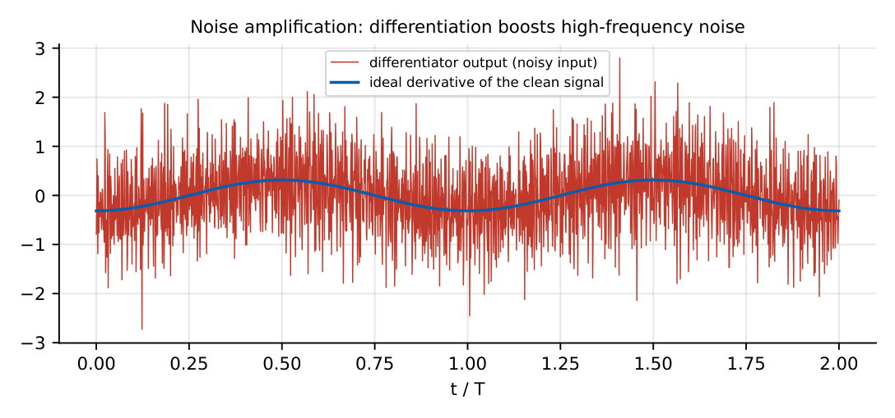
20.9 Waveform generation
An integrator and a Schmitt trigger (Chapter 23) in a loop produce simultaneous square and triangular waves.
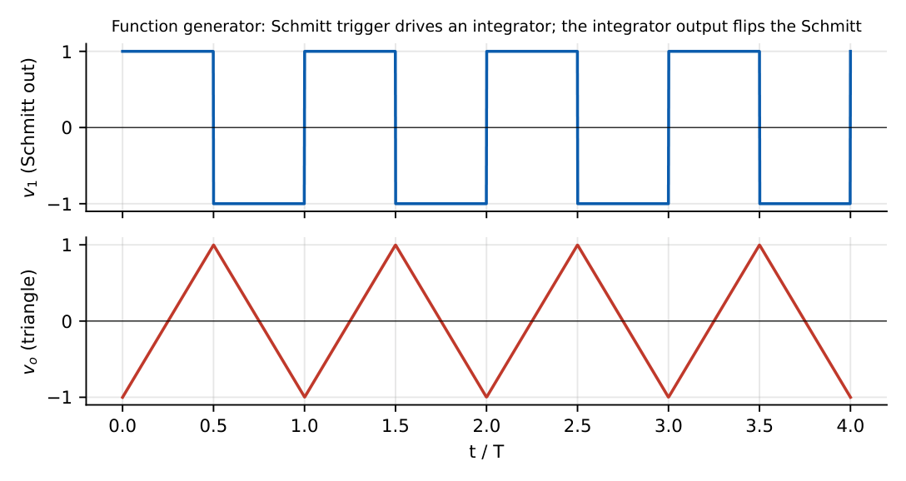
Schmitt thresholds \(\pm V_T=\pm\dfrac{R_1}{R_2}V_{sat}\) \(\Rightarrow\) triangle amplitude \(V_T\), slope \(=V_{sat}/RC\)
\(T=4RC\dfrac{R_1}{R_2}\), \(f=\dfrac{R_2}{4R_1RC}\)
\(R=10\) k, \(C=10\) nF, \(R_1/R_2=0.1\), \(V_{sat}=13\) V: triangle amplitude \(1.3\) V; \(T=4\times0.1\,\mathrm{ms}\times0.1=40\ \mu\)s, \(f=25\) kHz.
20.10 GATE problems
Q1. An ideal integrator with \(RC=1\) ms receives \(+2\) V dc, starting at 0. Output after \(1\) ms is V.
Q2. Ideal differentiator with \(RC=0.1\) ms, input a ramp of \(5\) V/ms. Output is V.
Q3. Integrator \(R=10\) k\(\Omega\), \(C=0.1\ \mu\)F, input \(1\sin(1000t)\) V. Output amplitude is V.
Q4. Practical integrator with \(R_1=10\) k\(\Omega\) and \(R_f=100\) k\(\Omega\): DC gain (dB) is .
Q5. A differentiator with \(RC=1/(2\pi\times1000)\) s has gain magnitude at \(1\) kHz of (A) 0.1 (B) 1 (C) 10 (D) \(\infty\).
Q6. A square-wave input to an ideal integrator gives (A) sine (B) square (C) triangle (D) spikes.
Answers: Q1: \(-2\) V. Q2: \(-0.5\) V. Q3: \(1/(1000\times10^{-3})=1\) V. Q4: 20 dB. Q5: (B). Q6: (C).
- Find the output slope of an integrator with \(R=100\) k, \(C=1\ \mu\)F and a \(2\) V step. [\(-20\) V/s]
- State two ways to prevent integrator saturation due to offset. [Parallel \(R_f\); reset switch; DC-blocking cap]
- A differentiator with \(R=1\) k, \(C=0.1\ \mu\)F, input \(2\sin(2\pi\times5000t)\): output peak? [6.28 V]